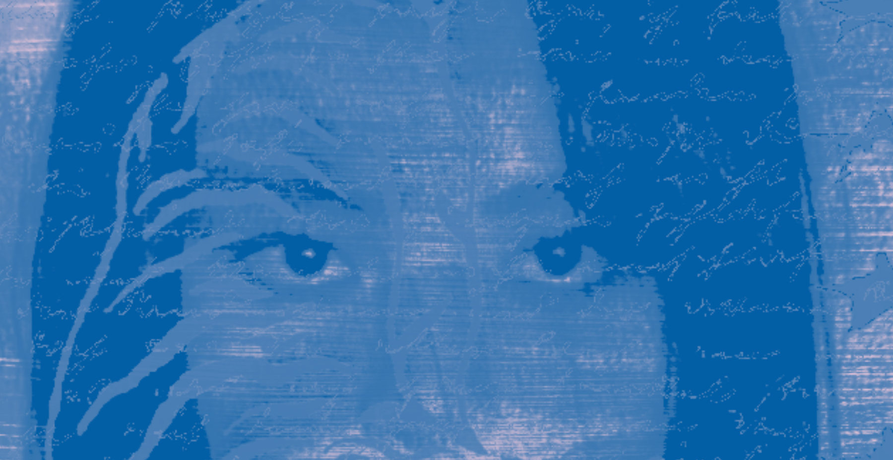

I began my design journey back in 2022. Since then I have built a wide portfolio of various projects, branding sets, and design explorations. Listed below are some of my strongest projects from over the years!
| Project | Programs | Year |
|---|---|---|
| East Tech Senior Shirt Campaign | Illustrator & Photoshop | 2023 |
| Curiel Expo Services Brand Redesign | Illustrator | 2024 |
| ARTMS Magazine Design | Indesign & Photoshop | 2024 |
| Geometric Zoo directory signs | Illustrator | 2024 |
| Redbull New Flavor Campaign | Illustrator, & Photoshop | 2024 |
| Digital Awareness exploration | Photoshop | 2025 |
| "In The Void" Webpage | Photoshop & Illustrator | 2025 |
| "In the Void" Inforgraphic Set | Illustrator | 2025 |
| "In The Void" Poster set | Illustrator | 2025 |
| Windor Springs Logo | Illustrator | 2025 |
| Werewolf Body Branding Kit | Illustrator | 2025 |
| The Aurora Project Webpage | Illustrator & Dreamweaver | 2025 |
| "The Body of Venus" Book Cover | Illustrator & Photoshop | Project 1, Year, Program |
| Moon Rabbit Cafe Menu | Illustrator | 2025 |
| Project Red Ape Branding Kit | Photoshop & Illustrator | 2026 |
| Tiger Eye Branding Kit | Photoshop | 2026 |
| Rising Star Poster | Illustrator & Photoshop | 2026 |